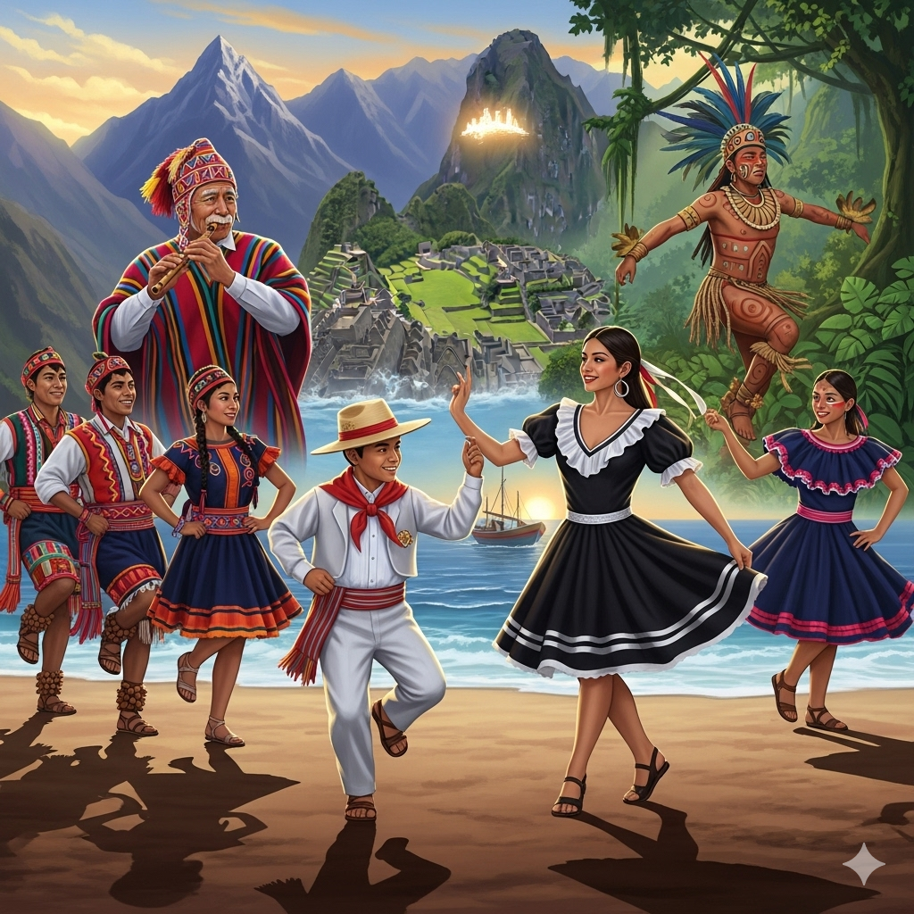

Nuestra misión es documentar, preservar y difundir las danzas folclóricas del Perú a través de una plataforma digital accesible y visualmente atractiva. Nos dedicamos a:
Investigar y documentar las danzas de cada región, recopilando información sobre sus orígenes, vestimenta, música y significado cultural.
Crear contenido multimedia de alta calidad (videos, galerías de fotos y artículos) que muestre la belleza y la técnica de cada baile.
Conectar a los amantes de la danza, investigadores y público en general con las tradiciones vivas de nuestro país, sirviendo como un recurso educativo y de inspiración constante.
Colaborar con las comunidades, agrupaciones de danza y artistas locales para asegurar la autenticidad y el respeto por cada manifestación cultural.
